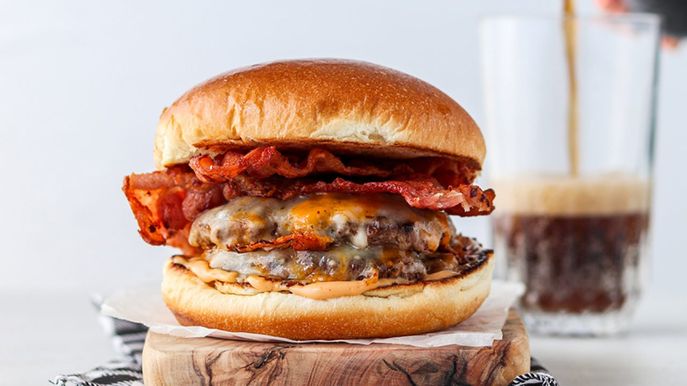

Cheeseburger

Desriciption
A delicious and juicy burger, so easy even I can make it!
Ingredients
- Ground beef
- Garlic powder, onion powder, salt, pepper, worschestershire sauce, chili powder
- Cheese slices
- Bacon
- Burger buns
- Any other toppings desired (I prefer barbeque sauce, and dill pickle slices)
Steps
- Put ground beef in a large bowl, and mix in 1 tsp - 1 tbsp of all seasonings, as desired
- Cook bacon in a pan on stove, while heating up the grill
- Form ground beef into patties
- Grill patties until done
- Toast buns if desired
- Assemble burgers, dont forget the cheese!
Home